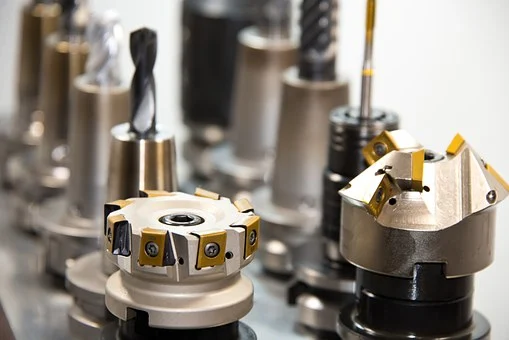

One thing that changed the world and its structure was the modern transformation. Machines came and changed the idea of industries and production. With machines coming into the picture the work output expands sharply and revolutionizes production in the world. Among every one of the parts of engineering, the most significant as indicated by many is mechanical engineering, the most important thing that we consider is the utilization of present industries and improvement. Plant and mechanical engineering in Germany are one of the main industries in the nation’s economy. Mechanical and plant engineering is liable for changing the outlook of Germany and furnishing it with a push-up to have the option to become one of the innovative masters of the world. The strength of this industry in Germany can be estimated by the way that there are over 6,000 organizations in view of mechanical engineering utilizing more than 964,000 laborers, which is significantly more than some other industries. Thus, concentrating on Masters’ in mechanical engineering in Germany can be an extraordinary career choice.
Without having some idea, thought and further modifications or advancements Engineering can never be grow. Mechanical and Plant engineering is known for being innovative fields, if you want to study innovative fields. Mechanical and plant designing is known for being imaginative fields, so assuming you concentrate on mechanical designing in Germany, there are extraordinary open doors for you to explore new ideas. German organizations continue to set better expectations of advancement by utilizing future innovation, so for students of Masters in mechanical engineering in Germany, there’s a bright future ahead. The Cologne Institute of Economic Research has said that the area has contributed over 12.67 billion on advancement out of which has 66% has been put resources into the mechanical business and has produced new and inventive innovation. Simply check out the innovative work, they have spent over 5 billion pounds around here.